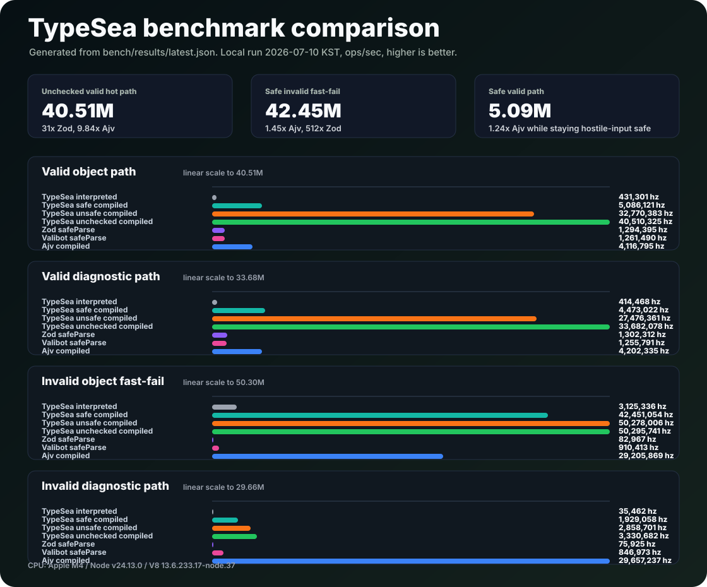

Builders
t.string, t.number, t.object, t.strictObject, t.union, t.array, t.lazy.
Overview 개요
TypeSea turns immutable schemas into runtime guards, compiled validators, AOT modules, JSON Schema exports, framework adapters, and frozen diagnostic Result values. TypeSea는 불변 스키마를 런타임 가드, 컴파일된 검증기, AOT 모듈, JSON Schema 출력, 프레임워크 어댑터, 동결된 진단 Result로 연결합니다.
Quick start 빠른 시작
npm install typeseaimport { compile, t, toJsonSchema, type Infer } from "typesea";
const User = t.strictObject({
id: t.string.uuid(),
age: t.number.int().gte(0),
role: t.union(t.literal("admin"), t.literal("user"))
});
type User = Infer<typeof User>;
if (User.is(input)) {
input.id;
}
const checked = User.check(input);
const FastUser = compile(User, { name: "isUser" });
const schema = toJsonSchema(User);Architecture 아키텍처
The graph is the source for generated validators, while the plan-owned kernel keeps ordinary guard execution out of a generic node interpreter. 그래프는 생성 검증기의 원본이고, 계획이 소유한 커널은 일반 가드 실행이 범용 노드 인터프리터를 거치지 않게 합니다.
API map API 지도
t.string, t.number, t.object, t.strictObject, t.union, t.array, t.lazy.
is() for narrowing, check() for Result diagnostics, assert() for throwing integration boundaries.
is()는 타입 좁히기, check()는 Result 기반 진단, assert()는 예외가 필요한 연동 지점에 씁니다.
compile(), emitAotModule(), safe mode, unsafe mode, and unchecked mode.
compile(), emitAotModule(), safe/unsafe/unchecked 모드.
t.decoder, t.transform, t.pipe, t.coerce, plus async variants.
t.decoder, t.transform, t.pipe, t.coerce와 async 변형.
formatIssue, formatIssues, withMessages, defineMessages.
toJsonSchema and schemaToJsonSchema succeed only when semantics are preserved.
toJsonSchema와 schemaToJsonSchema는 의미를 보존할 수 있을 때만 성공합니다.
Adapters 어댑터
toTrpcParser and toAsyncTrpcParser.
toFastifyRouteSchema and toFastifyValidatorCompiler.
toReactHookFormResolver.
Benchmarks 벤치마크
Run npm run bench -- bench/ecosystem.bench.ts --run for the local benchmark suite.
로컬 벤치마크는 npm run bench -- bench/ecosystem.bench.ts --run으로 실행합니다.

Release gate 릴리스 게이트
npm run release:checkSource files 원본 파일
Project goal, benchmark headline, quick start, API summary, edge semantics, and release workflow. 프로젝트 목표, 벤치마크 요약, 빠른 시작, API 개요, 경계 동작, 릴리스 흐름을 다룹니다.
GitHub README
Guard, builder, decoder, compile, AOT, adapter, graph, JSON Schema, edge, and Result contracts. 가드, 빌더, 디코더, 컴파일, AOT, 어댑터, 그래프, JSON Schema, 경계 조건, Result 계약을 정리합니다.
docs/api.md
Hot path rules, type-system rules, Sea-of-Nodes validation IR, compiler notes, recursion, and benchmark scope. 핫패스 규칙, 타입 시스템 규칙, Sea-of-Nodes 검증 IR, 컴파일러 설계, 재귀 처리, 벤치마크 범위를 설명합니다.
docs/engine-notes.md
README README
Rendered from README.md.
docs/ko/readme.md에서 렌더링했습니다.
   TypeScript Dependencies Tree-shakeable Side-effect free No dependencies Module Node
TypeSea is a zero-runtime-dependency TypeScript runtime narrowing library built around immutable guards, optimized Sea-of-Nodes validation plans, runtime compilation, and AOT source generation.
Last local benchmark on 2026-07-05 KST: npm run bench -- bench/ecosystem.bench.ts --run, strict-object contract, operations per second on one machine.
TypeSea safe compiled validators are already in Ajv's boolean hot-path class while keeping descriptor-based hostile-input semantics. Unsafe and unchecked FastMode are the bragging-rights path for trusted normalized data: direct field loads, allocation-light strict-key loops, and V8-friendly monomorphic codegen.
Goal: not "probably valid", but provably parity-tested validation that never executes user code, never throws on expected failures, and never leaks mutable state across a public boundary.
Many validation libraries fall short when you care about:
pollution keys, forged schema objects, revoked proxies)
vs AOT-generated validators)
Result values instead of throw)TypeSea focuses on:
optional vs undefinedable)mechanically enforced by package policy before every release.
is()/check() execute a cached validationplan, compile() emits runtime predicates from optimized IR, and emitAotModule() emits standalone validator source. The runtime plan owns both the graph and a schema-specialized kernel, so the graph is the source of truth for generated validators without forcing ordinary is() through a per-node interpreter. Parity is fuzz-tested with sparse arrays, accessor properties, symbol keys, and non-enumerable extras included.
Schema payloads are frozen before they cross an API boundary.
semantics would be lost; runtime-only contracts return typed issues instead of silently weakening the schema.
import { compile, t, toJsonSchema, type Infer } from "typesea";
const User = t.strictObject({
id: t.string.uuid(),
email: t.string.email(),
age: t.number.int().nonnegative(),
role: t.enum(["admin", "user"]),
tags: t.array(t.string.min(1)).max(8)
});
type User = Infer<typeof User>;
// 1) Boolean narrowing — avoids diagnostic allocation on success
if (User.is(input)) {
input.id; // narrowed
}
// 2) Immutable diagnostics — frozen Result, never throws on expected failure
const checked = User.check(input);
if (!checked.ok) {
console.log(checked.error); // frozen issue list with paths
}
// 3) Hot path — generated validator code
const FastUser = compile(User, { name: "isUser" });
// 4) Interop — lossless-only JSON Schema export
const schema = toJsonSchema(User);Use is() for the allocation-light boolean path. Use check() when callers need the full immutable diagnostic list, or checkFirst() when a hot rejection path only needs one machine-readable issue. Use compile() or emitAotModule() when a stable schema is hot enough to deserve generated validator code. Compiled and AOT checkFirst() use a dedicated first-fault collector instead of building the full issue list and slicing it afterward.
const FastButLooseUser = compile(User, {
name: "isUserFast",
mode: "unsafe"
});
const FastTrustedShapeUser = compile(User, {
name: "isUserTrustedShape",
mode: "unchecked"
});compile(..., { mode: "unsafe" }) and emitAotModule(..., { mode: "unsafe" }) emit the V8-friendliest predicate TypeSea can generate: required object fields are read with direct bracket access, arrays and tuples use direct indexed loads, discriminants avoid descriptor reads, and strict-object extras are checked with an allocation-free for...in loop. This mode is for trusted, already-normalized data on extremely hot paths.
The default is still mode: "safe". Unsafe mode may execute getters, may accept prototype-backed values, and strict objects do not reject symbol or non-enumerable extras. Use it only when the caller owns the object graph or has already normalized input into plain data records. Unsafe generated predicates may also embed escaped static property keys directly in source so V8 can use ordinary property-load inline caches.
mode: "unchecked" goes one step further: it trusts the object shape and skips strict extra-key loops entirely. That is the fastest path for already-owned DTOs, but strict objects no longer reject any extra keys.
In unsafe and unchecked modes, successful compiled check() calls return a raw { ok: true, value } object instead of freezing the success result. Failed diagnostics are still frozen. Safe mode keeps the fully frozen Result contract. FastMode diagnostic collectors also use the same trusted direct-read object shape where possible, so their issue codes can be less hostile-input-specific than safe mode for missing/accessor-backed fields and sparse/accessor-backed array or record slots. Discriminant diagnostics also read tags directly.
Object presence is explicit — two different wrappers express two different contracts:
| Wrapper | Key may be absent | Value may be undefined | Inferred type |
|---|---|---|---|
t.optional(inner) | yes | no | key?: T |
t.undefinedable(inner) | no | yes | key: T | undefined |
t.nullable(inner) | — | value may be null | key: T | null |
TypeSea keeps the public schema tree for builder validation and diagnostics, then lowers each schema identity into a cached validation plan. The plan owns an optimized Sea-of-Nodes graph and a schema-specialized predicate kernel. Guard.is() uses the kernel to avoid per-node interpreter dispatch, while compile() and emitAotModule() emit predicates from the optimized graph. check() first asks the same plan for the verdict; failed values then replay the schema-aware diagnostic collector to produce issue paths and codes.
builder -> frozen schema -> lower -> Sea-of-Nodes IR -> optimize
optimize -> ValidationPlan { graph, schema kernel }
schema kernel -> Guard.is() / check() preflight
graph -> compile() predicate / emitAotModule() predicate / Guard.graph()
failed check() -> schema-aware diagnostic collectorLast local benchmark on 2026-07-05 KST, using npm run bench -- bench/ecosystem.bench.ts --run on the benchmark strict-object contract. These are operations per second on one machine, not release guarantees.
| Valid object path | hz |
|---|---|
TypeSea interpreted is() | 478,576 |
TypeSea compiled safe is() | 5,109,602 |
TypeSea compiled unsafe is() | 36,777,097 |
TypeSea compiled unchecked is() | 42,620,570 |
Zod safeParse | 1,400,045 |
Valibot safeParse | 1,400,599 |
| Ajv compiled | 4,238,036 |
| Valid diagnostic path | hz |
|---|---|
TypeSea interpreted check() | 424,989 |
TypeSea compiled safe check() | 4,642,948 |
TypeSea compiled unsafe check() | 37,184,199 |
TypeSea compiled unchecked check() | 42,487,325 |
Zod safeParse | 1,278,859 |
Valibot safeParse | 1,391,040 |
| Ajv compiled | 4,338,063 |
| Invalid object path | hz |
|---|---|
TypeSea interpreted is() | 3,325,603 |
TypeSea compiled safe is() | 43,094,061 |
TypeSea compiled unsafe is() | 50,738,235 |
TypeSea compiled unchecked is() | 50,898,012 |
Zod safeParse | 84,647 |
Valibot safeParse | 866,013 |
| Ajv compiled | 30,535,761 |
| Invalid diagnostic path | hz |
|---|---|
TypeSea interpreted check() | 405,590 |
TypeSea compiled safe check() | 2,107,460 |
TypeSea compiled unsafe check() | 3,186,702 |
TypeSea compiled unchecked check() | 3,509,673 |
Zod safeParse | 85,355 |
Valibot safeParse | 788,870 |
| Ajv compiled | 29,951,403 |
The safe compiled path stays close to Ajv while retaining TypeSea hostile-input semantics: descriptor-based property reads, symbol/non-enumerable strict-key rejection, presence semantics, immutable diagnostics, and TypeScript guard inference. Unsafe and unchecked compiled modes are faster because they deliberately give up parts of that hostile-input contract.
All public entry points are exported from the package root; builders are also grouped under the t table.
| Area | Entry points |
|---|---|
| Scalar guards | t.unknown, t.never, t.string, t.number, t.date, t.bigint, t.symbol, t.boolean, t.null, t.undefined, t.void |
| String checks | .min, .max, .length, .nonempty, .regex, .startsWith, .endsWith, .includes, .uuid, .email, .url, .isoDate, .isoDateTime, .ulid, .ipv4, .ipv6 |
| Number checks | .int, .finite, .safe, .gte, .lte, .min, .max, .gt, .lt, .multipleOf, .positive, .nonnegative, .negative, .nonpositive |
| Date checks | .min, .max |
| Literal and containers | t.literal, t.enum, t.array, t.tuple, tuple rest, t.record, t.map, t.set, t.json |
| Array checks | .min, .max, .length, .nonempty |
| Objects | t.object, t.strictObject, extend, safeExtend, merge, pick, omit, partial, deepPartial, required, strict, passthrough, strip, catchall |
| Runtime object contracts | t.instanceOf, t.property, guard.property |
| Composition | t.union, t.discriminatedUnion, t.intersect, guard.intersect |
| Presence wrappers | t.optional, t.undefinedable, t.nullable, t.nullish |
| Dynamic contracts | t.lazy, t.refine |
| Area | Entry points |
|---|---|
| Sync decoders | t.decoder, t.transform, t.pipe, t.default, t.defaultValue, t.prefault, t.catch, t.codec, t.coerce, t.string.trim(), t.string.toLowerCase(), t.string.toUpperCase() |
| Async decoders | t.asyncDecoder, t.asyncRefine, t.asyncTransform, t.asyncPipe |
| Area | Entry points |
|---|---|
| Guard methods | guard.is(), guard.check(), guard.checkFirst(), guard.graph() |
| Generated validators | compile, emitAotModule |
| JSON Schema | toJsonSchema |
| Messages | formatIssue, formatIssues, flattenIssues, withMessages |
| Area | Entry points |
|---|---|
| Messages / i18n | formatIssue, formatIssues, flattenIssues, withMessages, defineMessages |
| tRPC | toTrpcParser, toAsyncTrpcParser |
| Fastify | toFastifyRouteSchema, toFastifyValidatorCompiler |
| React Hook Form | toReactHookFormResolver |
Adapters accept compiled guards too. Compile once at startup, then pass the compiled guard into parser or validator-compiler adapters so framework hot paths reuse the generated predicate.
const FastUser = compile(User);
const trpcParser = toTrpcParser(FastUser);
const fastifyCompiler = toFastifyValidatorCompiler(FastUser);
// Trusted normalized data only: trades hostile-input hardening for direct reads.
const UnsafeUser = compile(User, { mode: "unsafe" });
const internalParser = toTrpcParser(UnsafeUser);Deliberate, documented, and pinned by tests:
| Input | Behavior |
|---|---|
NaN, Infinity | rejected by t.number (finite numbers only); t.literal(NaN) matches NaN |
-0 vs 0 | literals match via Object.is; diagnostics format -0 distinctly |
| Getter-backed properties | never executed; treated as missing/invalid data |
__proto__, constructor keys | validated as plain own keys, no pollution |
| Sparse array holes | read as undefined without executing accessors |
| Strict object extras | rejected via Reflect.ownKeys — including symbol keys and non-enumerable properties |
catchall extras | unknown own keys are descriptor-read and validated by the catchall schema |
strip() | validation-only alias for accepting extras; TypeSea does not clone stripped output |
t.date | accepts valid JavaScript Date objects; .min and .max compare epoch milliseconds without reading user-overridable Date methods |
t.map, t.set, t.instanceOf | runtime-only contracts; JSON Schema and AOT export reject them instead of weakening semantics |
property | validates own data properties only; getter-backed properties are rejected |
| Global-flag regexes | cloned at construction; lastIndex reset before every test |
| UUID | accepts RFC 9562 versions 1–8 plus the nil UUID |
| Cyclic input values | validate finitely via (value × schema) active-pair tracking |
| Nesting depth | capped at 256 recursive frames; deeper input fails instead of overflowing the stack |
unknown.** Do not pre-narrow with as — thebuilder API is typed so that narrowing happens through validation.
t.lazy.** Direct schema object cycles arerejected at construction.
Stable hot schemas: compile(). CSP environments or build-time generation: emitAotModule().
t.pipe around a validated shape instead of mixing decoders into t.object entries.
Every gate that CI runs is a local npm script:
npm run check # policy, docs, typecheck, lint, tests, build, dist, API snapshot, pack
npm run check:consumer # tarball install + runtime/type smoke in a temp project
npm run bench -- --run # benchmark smoke
npm run pack:dry # package contents dry run
npm run release:check # the full pre-publish gate (everything above)
npm run release:publish # npm publish with provenance and ignored lifecycle scriptsnpm run release:check runs the same gate expected before publishing: typecheck, lint, tests, build, docs smoke, dist policy, public API snapshot, package contents, consumer install, benchmark smoke, and pack dry run. CI executes it on Node 20.19, 22, and 24; releases publish with npm provenance.
Release path:
vX.Y.Z tag or run the GitHub Release workflow with that tag.package.json.Publish workflow through npm run release:publish, which expands to npm publish --provenance --access public --ignore-scripts.Local publishing with NPM_TOKEN is reserved for manual recovery releases. It must still run npm run release:check first, and it cannot attach GitHub OIDC provenance.
No application code changes are required. 0.3.1 is a release-hardening patch: it tightens manual release tag handling, documents npm provenance expectations, adds a security policy, and verifies that npm exposes the published version after the GitHub publish workflow completes.
MIT License. See LICENSE.
TypeSea는 런타임 의존성 없이 TypeScript 값을 검증하고 타입을 좁히는 라이브러리입니다. 불변 스키마, Sea-of-Nodes에서 영향을 받은 검증 IR, 런타임 컴파일, AOT 소스 생성을 한 흐름으로 묶는 것을 목표로 합니다.
마지막 로컬 벤치마크는 2026-07-05 KST에 실행했습니다. 명령은 npm run bench -- bench/ecosystem.bench.ts --run이며, strict object 계약을 대상으로 한 단일 머신의 초당 실행 횟수입니다. 아래 수치는 회귀를 잡기 위한 로컬 측정값이지, 릴리스 성능 보증값은 아닙니다.
TypeSea의 안전 모드 컴파일 검증기는 getter 실행 방지와 strict extra key 검사 같은 적대적 입력 방어를 유지하면서도 Ajv의 boolean hot path에 가까운 성능을 냅니다. unsafe와 unchecked FastMode는 호출자가 이미 입력을 정규화했고 객체 그래프를 신뢰할 수 있을 때 쓰는 성능 우선 경로입니다. 이 모드에서는 직접 필드 로드, 할당을 줄인 strict-key loop, V8이 inline cache를 붙이기 쉬운 코드 형태를 사용합니다.
목표는 "대충 유효해 보이면 통과"가 아닙니다. TypeSea의 목표는 런타임 실행, 컴파일 실행, AOT 실행이 같은 판정을 내린다는 사실을 테스트로 고정하는 검증기입니다. 사용자 코드를 실행하지 않고, 예상 가능한 실패에서 예외를 던지지 않으며, 공개 API 경계 밖으로 변경 가능한 내부 상태를 내보내지 않는 것을 기본 원칙으로 둡니다.
검증 라이브러리를 실제 경계 입력에 쓰다 보면 다음 조건을 동시에 만족시키기 어렵습니다.
throw 대신 Result로 표현되는 명시적 실패TypeSea는 아래 원칙에 집중합니다.
optional과 undefinedable을 분리하는 명시적 key presence 규칙is()와 check()는 cached validation plan을 실행하고, compile()은 최적화된 IR에서 런타임 predicate를 생성하며, emitAotModule()은 standalone validator source를 만듭니다. 일반 is()는 per-node interpreter를 타지 않고 schema-specialized kernel을 사용합니다. sparse array, accessor property, symbol key, non-enumerable extra까지 포함해 parity fuzz test를 돌립니다.import { compile, t, toJsonSchema, type Infer } from "typesea";
const User = t.strictObject({
id: t.string.uuid(),
email: t.string.email(),
age: t.number.int().nonnegative(),
role: t.enum(["admin", "user"]),
tags: t.array(t.string.min(1)).max(8)
});
type User = Infer<typeof User>;
// 1) Boolean narrowing: 성공 경로에서 진단 객체를 만들지 않습니다.
if (User.is(input)) {
input.id; // narrowed
}
// 2) Immutable diagnostics: 예상 가능한 실패는 Result로 받습니다.
const checked = User.check(input);
if (!checked.ok) {
console.log(checked.error); // path가 포함된 동결 issue 목록
}
// 3) Hot path: 검증 코드를 생성합니다.
const FastUser = compile(User, { name: "isUser" });
// 4) Interop: 의미 손실이 없을 때만 JSON Schema로 내보냅니다.
const schema = toJsonSchema(User);is()는 할당이 적은 boolean 경로에 씁니다. 호출자가 전체 실패 이유와 path를 필요로 하면 check()를 씁니다. hot rejection path에서 기계가 읽을 첫 번째 실패만 필요하면 checkFirst()를 씁니다. 스키마가 안정적이고 호출 빈도가 높다면 compile() 또는 emitAotModule()을 씁니다. compiled/AOT checkFirst()는 전체 issue list를 만든 뒤 자르지 않고 전용 first-fault collector를 사용합니다.
const FastButLooseUser = compile(User, {
name: "isUserFast",
mode: "unsafe"
});
const FastTrustedShapeUser = compile(User, {
name: "isUserTrustedShape",
mode: "unchecked"
});compile(..., { mode: "unsafe" })와 emitAotModule(..., { mode: "unsafe" })는 TypeSea가 생성할 수 있는 가장 V8 친화적인 predicate를 방출합니다. required object field는 direct bracket access로 읽고, array와 tuple은 direct indexed load를 쓰며, discriminant는 descriptor read를 피합니다. strict-object extra는 allocation-free for...in loop로 검사합니다.
기본값은 여전히 mode: "safe"입니다. unsafe mode는 getter를 실행할 수 있고, prototype-backed value를 받아들일 수 있으며, strict object에서 symbol 또는 non-enumerable extra를 거부하지 않습니다. 호출자가 객체 그래프를 소유하고 있거나 입력을 plain data record로 이미 정규화한 경우에만 사용하세요.
mode: "unchecked"는 한 단계 더 나아가 object shape을 신뢰하고 strict extra-key loop 자체를 건너뜁니다. 이미 소유한 DTO에서는 가장 빠른 경로지만, strict object가 더 이상 extra key를 거부하지 않습니다.
unsafe와 unchecked mode에서 successful compiled check()는 frozen success result 대신 raw { ok: true, value } object를 반환합니다. 실패 진단은 계속 freeze됩니다. safe mode는 success와 failure 모두 frozen Result 계약을 유지합니다.
객체 key 존재 여부는 명시적으로 표현합니다. 서로 다른 wrapper는 서로 다른 계약을 뜻합니다.
| Wrapper | key 생략 허용 | value undefined 허용 | 추론 타입 |
|---|---|---|---|
t.optional(inner) | yes | no | key?: T |
t.undefinedable(inner) | no | yes | key: T | undefined |
t.nullable(inner) | - | value may be null | key: T | null |
TypeSea는 builder validation과 diagnostic을 위해 public schema tree를 유지합니다. 그 뒤 각 schema identity를 cached validation plan으로 낮춥니다. plan은 최적화된 Sea-of-Nodes graph와 schema-specialized predicate kernel을 소유합니다. Guard.is()는 per-node interpreter dispatch를 피하려고 kernel을 사용하고, compile()과 emitAotModule()은 optimized graph에서 predicate를 방출합니다. check()는 먼저 같은 plan으로 판정을 얻고, 실패한 값만 schema-aware diagnostic collector로 replay해서 issue path와 code를 만듭니다.
builder -> frozen schema -> lower -> Sea-of-Nodes IR -> optimize
optimize -> ValidationPlan { graph, schema kernel }
schema kernel -> Guard.is() / check() preflight
graph -> compile() predicate / emitAotModule() predicate / Guard.graph()
failed check() -> schema-aware diagnostic collector마지막 로컬 벤치마크는 2026-07-05 KST에 실행했습니다. npm run bench -- bench/ecosystem.bench.ts --run을 사용했고, benchmark strict-object 계약을 대상으로 했습니다. 아래 값은 단일 머신의 초당 실행 횟수이며 릴리스 성능 보증값은 아닙니다.
| 유효한 객체: boolean 경로 | hz |
|---|---|
TypeSea interpreted is() | 478,576 |
TypeSea compiled safe is() | 5,109,602 |
TypeSea compiled unsafe is() | 36,777,097 |
TypeSea compiled unchecked is() | 42,620,570 |
Zod safeParse | 1,400,045 |
Valibot safeParse | 1,400,599 |
| Ajv compiled | 4,238,036 |
| 유효한 객체: 진단 경로 | hz |
|---|---|
TypeSea interpreted check() | 424,989 |
TypeSea compiled safe check() | 4,642,948 |
TypeSea compiled unsafe check() | 37,184,199 |
TypeSea compiled unchecked check() | 42,487,325 |
Zod safeParse | 1,278,859 |
Valibot safeParse | 1,391,040 |
| Ajv compiled | 4,338,063 |
| 잘못된 객체: boolean 경로 | hz |
|---|---|
TypeSea interpreted is() | 3,325,603 |
TypeSea compiled safe is() | 43,094,061 |
TypeSea compiled unsafe is() | 50,738,235 |
TypeSea compiled unchecked is() | 50,898,012 |
Zod safeParse | 84,647 |
Valibot safeParse | 866,013 |
| Ajv compiled | 30,535,761 |
| 잘못된 객체: 진단 경로 | hz |
|---|---|
TypeSea interpreted check() | 405,590 |
TypeSea compiled safe check() | 2,107,460 |
TypeSea compiled unsafe check() | 3,186,702 |
TypeSea compiled unchecked check() | 3,509,673 |
Zod safeParse | 85,355 |
Valibot safeParse | 788,870 |
| Ajv compiled | 29,951,403 |
safe compiled path는 TypeSea의 적대적 입력 방어를 유지하면서 Ajv에 가깝게 동작합니다. descriptor 기반 property read, symbol/non-enumerable strict-key rejection, key presence semantics, immutable diagnostics, TypeScript guard inference를 유지합니다. unsafe와 unchecked compiled mode는 그 방어 계약 일부를 의도적으로 포기하기 때문에 더 빠릅니다.
모든 공개 진입점은 package root에서 export됩니다. builder는 t table 아래에도 묶여 있습니다.
| 영역 | Entry points |
|---|---|
| Scalar guard | t.unknown, t.never, t.string, t.number, t.date, t.bigint, t.symbol, t.boolean, t.null, t.undefined, t.void |
| String check | .min, .max, .length, .nonempty, .regex, .startsWith, .endsWith, .includes, .uuid, .email, .url, .isoDate, .isoDateTime, .ulid, .ipv4, .ipv6 |
| Number check | .int, .finite, .safe, .gte, .lte, .min, .max, .gt, .lt, .multipleOf, .positive, .nonnegative, .negative, .nonpositive |
| Date check | .min, .max |
| Literal과 container | t.literal, t.enum, t.array, t.tuple, tuple rest, t.record, t.map, t.set, t.json |
| Array check | .min, .max, .length, .nonempty |
| Object | t.object, t.strictObject, extend, safeExtend, merge, pick, omit, partial, deepPartial, required, strict, passthrough, strip, catchall |
| Runtime object contract | t.instanceOf, t.property, guard.property |
| Composition | t.union, t.discriminatedUnion, t.intersect, guard.intersect |
| Presence wrapper | t.optional, t.undefinedable, t.nullable, t.nullish |
| Dynamic contract | t.lazy, t.refine |
| 영역 | Entry points |
|---|---|
| Sync decoder | t.decoder, t.transform, t.pipe, t.default, t.defaultValue, t.prefault, t.catch, t.codec, t.coerce, t.string.trim(), t.string.toLowerCase(), t.string.toUpperCase() |
| Async decoder | t.asyncDecoder, t.asyncRefine, t.asyncTransform, t.asyncPipe |
| 영역 | Entry points |
|---|---|
| Guard method | guard.is(), guard.check(), guard.checkFirst(), guard.graph() |
| Generated validator | compile, emitAotModule |
| JSON Schema | toJsonSchema |
| 영역 | Entry points |
|---|---|
| Messages / i18n | formatIssue, formatIssues, flattenIssues, withMessages, defineMessages |
| tRPC | toTrpcParser, toAsyncTrpcParser |
| Fastify | toFastifyRouteSchema, toFastifyValidatorCompiler |
| React Hook Form | toReactHookFormResolver |
adapter도 compiled guard를 받을 수 있습니다. startup에서 한 번 compile한 뒤 parser나 validator-compiler adapter에 넘기면 framework hot path가 generated predicate를 재사용합니다.
const FastUser = compile(User);
const trpcParser = toTrpcParser(FastUser);
const fastifyCompiler = toFastifyValidatorCompiler(FastUser);
// 신뢰된 정규화 데이터 전용: 적대적 입력 방어를 direct read 성능과 맞바꿉니다.
const UnsafeUser = compile(User, { mode: "unsafe" });
const internalParser = toTrpcParser(UnsafeUser);의도적으로 정한 동작이며 테스트로 고정되어 있습니다.
| 입력 | 동작 |
|---|---|
NaN, Infinity | t.number는 거부합니다. finite number만 허용합니다. t.literal(NaN)은 NaN을 match합니다. |
-0 vs 0 | literal은 Object.is로 match합니다. diagnostic은 -0을 구분해서 format합니다. |
| Getter-backed properties | 실행하지 않습니다. missing 또는 invalid data로 취급합니다. |
__proto__, constructor keys | pollution 없이 plain own key로 검증합니다. |
| Sparse array holes | accessor 실행 없이 undefined로 읽습니다. |
| Strict object extras | Reflect.ownKeys로 거부합니다. symbol key와 non-enumerable property도 포함합니다. |
catchall extras | unknown own key는 descriptor로 읽고 catchall schema로 검증합니다. |
strip() | 출력 객체를 복사하지 않는 검증 전용 alias입니다. TypeSea에서는 extra key 허용 의미가 passthrough()와 같습니다. |
t.date | 유효한 JavaScript Date 객체만 허용합니다. .min과 .max는 사용자가 덮어쓸 수 있는 Date method를 읽지 않고 epoch millisecond로 비교합니다. |
t.map, t.set, t.instanceOf | runtime-only contract입니다. JSON Schema와 AOT export에서는 의미를 약화시키지 않고 명시적으로 거부합니다. |
property | own data property만 검증합니다. getter-backed property는 거부합니다. |
| Global-flag regexes | construction 시 clone하고, 매 test 전에 lastIndex를 reset합니다. |
| UUID | RFC 9562 version 1-8과 nil UUID를 허용합니다. |
| Cyclic input values | value x schema active-pair tracking으로 유한하게 검증합니다. |
| Nesting depth | recursive frame 256에서 cap을 둡니다. 더 깊은 input은 stack overflow 대신 실패합니다. |
unknown으로 들어옵니다.** as로 미리 좁히지 마세요. builder API는 validation을 통해 narrowing이 일어나도록 typed되어 있습니다.t.lazy를 통합니다.** 직접 순환하는 schema object는 construction에서 거부합니다.compile(), CSP 환경이나 build-time generation은 emitAotModule()이 맞습니다.t.object entry와 섞지 말고, validated shape 바깥에서 t.pipe로 transformation을 합성하세요.CI가 실행하는 gate는 전부 로컬 npm script입니다.
npm run check # policy, docs, typecheck, lint, tests, build, dist, API snapshot, pack
npm run check:consumer # tarball install + runtime/type smoke in a temp project
npm run bench -- --run # benchmark smoke
npm run pack:dry # package contents dry run
npm run release:check # the full pre-publish gate
npm run release:publish # provenance를 붙이고 lifecycle script를 무시하는 npm publishnpm run release:check는 publish 전에 기대하는 동일한 gate를 실행합니다. typecheck, lint, tests, build, docs smoke, dist policy, public API snapshot, package contents, consumer install, benchmark smoke, pack dry run을 포함합니다. CI는 Node 20.19, 22, 24에서 실행하고, release는 npm provenance와 함께 publish합니다.
릴리스 경로:
vX.Y.Z 태그를 push하거나 GitHub Release workflow를 그 태그로 실행합니다.package.json의 version과 일치하는지 확인합니다.Publish workflow에서 npm run release:publish로 수행합니다. 이 스크립트는 npm publish --provenance --access public --ignore-scripts로 확장됩니다.로컬 NPM_TOKEN publish는 수동 복구 릴리스용입니다. 이 경우에도 먼저 npm run release:check를 통과해야 하며, GitHub OIDC provenance는 붙지 않습니다.
애플리케이션 코드 변경은 필요하지 않습니다. 0.3.1은 release hardening patch입니다. manual release tag 처리를 더 엄격하게 만들고, npm provenance 기대치를 문서화하며, security policy를 추가하고, GitHub publish workflow가 끝난 뒤 npm에 새 버전이 실제로 보이는지 확인합니다.
MIT License. 자세한 내용은 LICENSE를 보세요.
API Reference API 레퍼런스
Rendered from docs/api.md.
docs/ko/api.md에서 렌더링했습니다.
TypeSea accepts untrusted input as unknown and narrows it through immutable guard values. The public API is small by design; most complexity lives behind builder validation, graph introspection, diagnostics, and export checks.
import {
compile,
emitAotModule,
t,
toJsonSchema,
type Guard,
type Infer
} from "typesea";The package exposes one root entry point. Subpath imports are intentionally not part of the public API. TypeSea is ESM-only and does not publish a CommonJS condition.
interface Guard<T> {
is(value: unknown): value is T;
check(value: unknown): CheckResult<T>;
checkFirst(value: unknown): CheckResult<T>;
assert(value: unknown): asserts value is T;
graph(): Graph;
}| Method | Use it for | Contract |
|---|---|---|
is | Hot boolean narrowing | Avoids diagnostic allocation on the success path. |
check | Validation with issues | Returns frozen Result<T, Issue[]> containers. |
checkFirst | Hot rejection diagnostics | Returns the same frozen Result shape, but failure contains at most one issue. Compiled and AOT guards use a dedicated first-fault collector. |
assert | Throwing integration boundaries | Throws TypeSeaAssertionError with copied, frozen issues. |
graph | Runtime plan introspection | Returns the validated, optimized, frozen Sea-of-Nodes graph held by the validation plan. |
Diagnostic paths contain only object keys and zero-based array or tuple indexes. Public diagnostic validators reject malformed path segments before diagnostics cross the API boundary.
| Family | Builders |
|---|---|
| Scalars | t.unknown, t.never, t.string, t.number, t.date, t.bigint, t.symbol, t.boolean, t.null, t.undefined, t.void |
| String checks | .min, .max, .length, .nonempty, .regex, .startsWith, .endsWith, .includes, .uuid, .email, .url, .isoDate, .isoDateTime, .ulid, .ipv4, .ipv6 |
| Number checks | .int, .finite, .safe, .gte, .lte, .min, .max, .gt, .lt, .multipleOf, .positive, .nonnegative, .negative, .nonpositive |
| Date checks | .min, .max |
| Literals and containers | t.literal(value), t.enum(values), t.array(item), t.tuple([a, b]), t.tuple([head], rest), t.record(value), t.map(key, value), t.set(item), t.json() |
| Array checks | .min, .max, .length, .nonempty |
| Objects | t.object(shape), t.strictObject(shape) |
| Object transforms | t.extend, t.safeExtend, t.merge, t.pick, t.omit, t.partial, t.deepPartial, t.required, t.strict, t.passthrough, t.strip, t.catchall, and matching object guard methods |
| Runtime object contracts | t.instanceOf(Ctor), t.property(base, key, value), guard.property(key, value) |
| Composition | t.union, t.discriminatedUnion, t.intersect, guard.intersect |
| Presence | t.optional, t.undefinedable, t.nullable, t.nullish |
| Dynamic guards | t.lazy, t.refine |
| Decoders | t.decoder, t.transform, t.pipe, t.default, t.defaultValue, t.prefault, t.catch, t.codec, t.coerce, t.string.trim(), t.string.toLowerCase(), t.string.toUpperCase() |
| Async decoders | t.asyncDecoder, t.asyncRefine, t.asyncTransform, t.asyncPipe |
Builder functions validate inputs before a schema can enter the validation plan, compiler, AOT emitter, diagnostic collector, or JSON Schema exporter. Forged guard-like values, invalid schema tags, invalid predicates, invalid bounds, malformed regexps, and invalid discriminated union case sets are rejected during construction.
Accepted schemas are frozen before storage. Public schema collection fields use frozen arrays and frozen key lookup records instead of mutable collection objects.
TypeSea separates key presence from value domain.
const Shape = t.object({
name: t.optional(t.string),
nickname: t.undefinedable(t.string)
});name may be absent. If name exists, its value must be a string.nickname must be present. Its value may be a string or undefined.t.nullable(inner) adds null to the value domain.t.nullish(inner) combines nullable value semantics with optional object-keypresence.
nullable,undefinedable, brand, and refine.
Object combinators preserve object mode. Strict object guards remain strict after extend, pick, omit, or partial; passthrough object guards keep allowing unknown keys.
catchall(schema) validates every undeclared own key with schema. strip() is validation-only in TypeSea: guards return the original value, so it has the same validation behavior as passthrough(). pick and omit accept either key arrays or Zod-style { key: true } masks. deepPartial() recursively partializes pure object, array, tuple, tuple rest, record, map, set, property, union, intersection, nullable, undefinedable, optional, and brand schemas. Lazy and refinement schemas are semantic barriers.
property validates only own data descriptors. It is useful for class instances with stable fields; prototype getters and accessor-backed properties are rejected instead of executed.
t.union(a, b) accepts a value that satisfies at least one branch.
t.discriminatedUnion("kind", cases) requires string case keys. Each case must be a statically inspectable object case whose dispatch key is a required string literal matching the case name.
t.intersect(a, b) and guard.intersect(other) require the same input value to satisfy both guards. check() collects diagnostics from both sides.
Recursive contracts must use t.lazy.
interface ListNode {
readonly value: string;
readonly next?: ListNode;
}
const Node: Guard<ListNode> = t.lazy((): Guard<ListNode> =>
t.object({
value: t.string,
next: t.optional(Node)
})
);Direct cyclic schema objects are rejected at builder boundaries. Lazy guards resolve once per guard instance and keep recursive schema identity stable. A lazy chain must eventually resolve to a concrete non-lazy schema.
const Count = t.pipe(t.coerce.number(), t.number.int().gte(0));
const result = Count.decode("42");
const Name = t.default(t.string.min(1), "anonymous");
const NormalizedName = t.string
.trim()
.pipe(t.string.min(1))
.transform((value) => value.toLowerCase())
.default("anonymous")
.catch("anonymous");
const NumberText = t.codec(
t.string.regex(/^\d+$/u, "digits"),
t.number.int().nonnegative(),
{
decode: (value) => Number(value),
encode: (value) => String(value)
}
);Decoders are for output-producing operations. They return Result from decode() and do not expose is() predicates, because the decoded output may not be the same runtime value as the input.
t.transform(source, mapper) decodes source, then maps the decoded value.t.pipe(source, next) feeds a successful decoded value into the next guard or decoder.t.default(source, value) returns a fallback output for undefined input.t.prefault(source, value) feeds a fallback input through the source.t.catch(source, value) returns a fallback output after a failed decode.t.codec(input, output, mapping) validates both sides of a bidirectional decode/encode pair.t.coerce.string, t.coerce.number, and t.coerce.boolean provide explicitprimitive coercion.
t.string.trim(), t.string.toLowerCase(), and t.string.toUpperCase()are decoder helpers. They validate the string first, then return transformed output from decode().
t.asyncRefine, t.asyncTransform, and t.asyncPipe returnPromise<Result<T, Issue[]>> from decodeAsync().
Expected async validation failures still return Result values.
const checked = withMessages(User.check(input), {
locale: "ko",
catalog: defineMessages({
expected_string: "{path}: 문자열 필요"
})
});formatIssue, formatIssues, flattenIssues, and withMessages render diagnostics after validation has finished. This keeps is() and ordinary check() paths free from message allocation.
Built-in locales are en and ko. Custom catalogs can use string templates with {path}, {code}, {expected}, and {actual}, or formatter callbacks. withMessages(result, options) preserves successful results and returns a new failed Result with copied, frozen issues whose message fields are populated. flattenIssues(issues, options) groups rendered messages into formErrors and top-level fieldErrors buckets.
const FastUser = compile(User, { name: "isUser" });
FastUser.is(input);
FastUser.check(input);compile emits generated predicate functions from the optimized Sea-of-Nodes validation graph plus diagnostics collectors for failed values. Static scalar, object, array, record, union, and strict-key nodes lower to straight-line JavaScript or indexed loops where possible. Dynamic schema edges such as lazy and refine keep semantics by using the same IR-backed runtime fallback as ordinary guards.
The optional name is a debugging and profiling hint. TypeSea normalizes it into a strict-mode-safe JavaScript function name, prefixes reserved names, and caps generated name length. Direct compiled guard construction validates the predicate, collector, and source arguments. Collector diagnostics are validated, copied, and frozen before check() returns them.
Generated source never interpolates user-controlled values directly. Literals, regexps, property keys, keysets, and dynamic schema fallbacks are captured in side tables and referenced by numeric index.
const FastButLooseUser = compile(User, {
name: "isUserFast",
mode: "unsafe"
});CompileOptions["mode"] and AotCompileOptions["mode"] are "safe" | "unsafe" | "unchecked" | undefined; omitted options default to "safe". Safe mode keeps TypeSea's hostile-input contract: descriptor-based property reads, no getter execution, and strict-object rejection for symbol and non-enumerable extras.
Unsafe mode is an explicit performance escape hatch for trusted, normalized plain data:
value[key] when the field schema rejectsundefined.
for...in loop.
This may execute getters, may accept prototype-backed values, and does not reject symbol or non-enumerable extras on strict objects. Because compiled check() first trusts the generated predicate verdict, an unsafe predicate that returns true also returns a successful check() result. Use unsafe mode only after the input has crossed a trusted normalization boundary.
Unsafe mode may embed escaped static property keys directly into generated predicate source so V8 can attach ordinary property-load inline caches. Safe mode keeps property keys in side tables.
Unchecked mode uses the unsafe direct-read shape and also skips strict-object extra-key loops. It is only for input whose object shape has already been trusted or normalized; strict objects no longer reject extra keys in this mode. Unsafe and unchecked compiled check() calls also return raw successful Result objects without Object.freeze(). Failure diagnostics remain frozen. Safe mode keeps frozen success and failure Result objects. FastMode diagnostic collectors use direct field reads and FastMode strict-key rules for object diagnostics where possible, so missing/accessor issue codes are not guaranteed to match safe mode. Array and tuple diagnostics also use direct indexed reads in fast modes, so sparse slots are diagnosed from the loaded undefined value. Record diagnostics use direct record[key] reads; unchecked mode also visits inherited enumerable keys. Discriminant diagnostics read the tag directly and compare string cases with ===.
const emitted = emitAotModule(User, { name: "aotUser" });
const unsafeEmitted = emitAotModule(User, {
name: "aotUserFast",
mode: "unsafe"
});
const uncheckedEmitted = emitAotModule(User, {
name: "aotUserTrustedShape",
mode: "unchecked"
});emitAotModule returns Result<AotModule, AotIssue[]>. A successful result contains standalone ESM validator source plus declaration source. The generated module exports is, check, assert, and a default frozen guard-like object, without requiring dynamic source compilation at module load time.
AOT generation is lossless-only. Schemas that require runtime callbacks or identity that cannot be serialized return explicit AOT issues.
const parser = toTrpcParser(User);
const routeSchema = toFastifyRouteSchema(User);
const validatorCompiler = toFastifyValidatorCompiler(User);
const resolver = toReactHookFormResolver(User);Adapters are structural and zero-dependency. TypeSea does not import tRPC, Fastify, or React Hook Form.
Compiled guards can be passed to the same adapters. This is the preferred shape for hot request paths: compile once during startup, then let the adapter reuse the generated predicate.
const FastUser = compile(User);
const fastParser = toTrpcParser(FastUser);
const fastValidatorCompiler = toFastifyValidatorCompiler(FastUser);Use the default compiled mode at public input boundaries. It keeps the safe descriptor-read contract even when an adapter hides the direct is() call. For trusted, already-normalized internal data, the faster modes can be wired through adapters the same way.
const UnsafeUser = compile(User, { mode: "unsafe" });
const internalParser = toTrpcParser(UnsafeUser);
const TrustedShapeUser = compile(User, { mode: "unchecked" });
const internalValidatorCompiler = toFastifyValidatorCompiler(TrustedShapeUser);| Adapter | Export | Behavior |
|---|---|---|
| tRPC | toTrpcParser, toAsyncTrpcParser | Return parser objects that emit decoded values or throw TypeSeaAssertionError. |
| Fastify route schema | toFastifyRouteSchema | Converts guards to JSON Schema route fragments. |
| Fastify validator compiler | toFastifyValidatorCompiler | Returns compiler-shaped validators that produce { value } or { error }. |
| React Hook Form | toReactHookFormResolver | Returns an async resolver with TypeSea messages mapped to field errors. |
const graph = User.graph();
const optimized = optimizeGraph(graph);Guard.graph() returns the optimized Sea-of-Nodes validation graph held by the runtime validation plan. The same plan also owns the specialized predicate kernel used by is(). The graph is the source for compile() and emitAotModule(), while the kernel keeps ordinary guard execution out of a generic per-node interpreter. Public graph values are validated, dependency-checked, dense, and frozen.
optimizeGraph(graph) validates direct graph inputs before optimizing them. Regex graph nodes accept only plain RegExp values and store non-extensible regexps, cloning extensible inputs before the graph is frozen.
SchemaCheck records dynamic runtime schema logic such as lazy or refine. It keeps the IR truthful instead of pretending a callback-backed edge is a static primitive.
const result = toJsonSchema(User);toJsonSchema returns Result<JsonSchema, JsonSchemaExportIssue[]>. It succeeds only when TypeSea can represent the contract over JSON-compatible input values without semantic loss.
Runtime-only concepts return explicit export issues:
undefinedbigintsymbolDate, Map, Set, instanceOf, and property contractslazyrefineNaN, Infinity, and-0
schemaToJsonSchema(schema) is the direct schema API. It validates the supplied schema and freezes it before export. JSON Schema options are also validated; schemaId, when present, must be a string.
Object properties maps are emitted as null-prototype records so special keys such as __proto__, constructor, and hasOwnProperty remain ordinary own schema properties.
Object.is, so t.literal(Number.NaN) matches NaN andt.literal(-0) does not match 0.
t.number accepts only finite JavaScript numbers. NaN, Infinity, and-Infinity are rejected before configured numeric predicates run.
true; truthy non-boolean values donot pass validation.
RegExp checks reset lastIndex before each test, so global and stickyregexps do not leak state across validations.
RegExp instances. Accepted regex checks are cloned before storage.
type Result<T, E> =
| { ok: true; value: T }
| { ok: false; error: E };Expected validation failures use Result. Result containers are frozen at runtime. Successful values are not recursively frozen because they are caller-owned data.
TypeSea는 신뢰할 수 없는 값을 unknown으로 받고, 불변 guard를 통해 타입을 좁힙니다. 공개 API는 작게 유지하고, 복잡한 검증 로직은 builder validation, graph introspection, diagnostics, export check 내부에 둡니다.
import {
compile,
emitAotModule,
t,
toJsonSchema,
type Guard,
type Infer
} from "typesea";패키지는 root entry point 하나만 노출합니다. subpath import는 공개 API가 아닙니다. TypeSea는 ESM-only이며 CommonJS condition을 publish하지 않습니다.
interface Guard<T> {
is(value: unknown): value is T;
check(value: unknown): CheckResult<T>;
checkFirst(value: unknown): CheckResult<T>;
assert(value: unknown): asserts value is T;
graph(): Graph;
}| 메서드 | 용도 | 계약 |
|---|---|---|
is | 빠른 boolean narrowing | 성공 경로에서 진단 객체를 만들지 않습니다. |
check | 실패 이유가 필요한 검증 | 동결된 Result<T, Issue[]> container를 반환합니다. |
checkFirst | hot path의 단일 실패 진단 | 같은 Result 형태를 반환하되 실패 시 issue를 최대 하나만 담습니다. compiled/AOT guard는 전용 first-fault collector를 사용합니다. |
assert | 예외가 필요한 연동 지점 | 복사되고 동결된 issue를 담은 TypeSeaAssertionError를 던집니다. |
graph | 검증 계획 introspection | validation plan이 보유한 validated, optimized, frozen Sea-of-Nodes graph를 반환합니다. |
diagnostic path에는 object key와 0부터 시작하는 array 또는 tuple index만 들어갑니다. 공개 diagnostic validator는 잘못된 path segment를 거부한 뒤 diagnostic을 API 밖으로 내보냅니다.
| 계열 | Builder |
|---|---|
| Scalar | t.unknown, t.never, t.string, t.number, t.date, t.bigint, t.symbol, t.boolean, t.null, t.undefined, t.void |
| String check | .min, .max, .length, .nonempty, .regex, .startsWith, .endsWith, .includes, .uuid, .email, .url, .isoDate, .isoDateTime, .ulid, .ipv4, .ipv6 |
| Number check | .int, .finite, .safe, .gte, .lte, .min, .max, .gt, .lt, .multipleOf, .positive, .nonnegative, .negative, .nonpositive |
| Date check | .min, .max |
| Literal과 container | t.literal(value), t.enum(values), t.array(item), t.tuple([a, b]), t.tuple([head], rest), t.record(value), t.map(key, value), t.set(item), t.json() |
| Array check | .min, .max, .length, .nonempty |
| Object | t.object(shape), t.strictObject(shape) |
| Object transform | t.extend, t.safeExtend, t.merge, t.pick, t.omit, t.partial, t.deepPartial, t.required, t.strict, t.passthrough, t.strip, t.catchall, 그리고 같은 이름의 object guard method |
| Runtime object contract | t.instanceOf(Ctor), t.property(base, key, value), guard.property(key, value) |
| Composition | t.union, t.discriminatedUnion, t.intersect, guard.intersect |
| Presence | t.optional, t.undefinedable, t.nullable, t.nullish |
| Dynamic guard | t.lazy, t.refine |
| Decoder | t.decoder, t.transform, t.pipe, t.default, t.defaultValue, t.prefault, t.catch, t.codec, t.coerce, t.string.trim(), t.string.toLowerCase(), t.string.toUpperCase() |
| Async decoder | t.asyncDecoder, t.asyncRefine, t.asyncTransform, t.asyncPipe |
builder function은 schema가 validation plan, compiler, AOT emitter, diagnostic collector, JSON Schema exporter로 들어가기 전에 입력을 검증합니다. 위조된 guard-like value, 잘못된 schema tag, 잘못된 predicate, 잘못된 bound, malformed regexp, 잘못된 discriminated union case set은 construction 중 거부됩니다.
허용된 schema는 저장 전에 freeze됩니다. 공개 schema collection field는 변경 가능한 collection object 대신 frozen array와 frozen key lookup record를 사용합니다.
TypeSea는 key가 존재하는지와 value domain을 분리합니다.
const Shape = t.object({
name: t.optional(t.string),
nickname: t.undefinedable(t.string)
});name은 없어도 됩니다. 존재한다면 값은 string이어야 합니다.nickname은 반드시 존재해야 합니다. 값은 string 또는 undefined일 수 있습니다.t.nullable(inner)는 value domain에 null을 추가합니다.t.nullish(inner)는 nullable value와 optional key 의미를 함께 제공합니다.nullable, undefinedable, brand, refine을 지나도 optional-key 의미는 보존됩니다.object combinator는 object mode를 보존합니다. strict object guard는 extend, pick, omit, partial 이후에도 strict를 유지하고, passthrough object guard는 unknown key 허용을 유지합니다.
catchall(schema)는 선언되지 않은 모든 own key를 schema로 검증합니다. strip()은 TypeSea에서 검증 전용 의미입니다. guard는 원본 값을 반환하므로, 검증 의미는 passthrough()와 같습니다. pick과 omit은 key array와 Zod 스타일 { key: true } mask를 모두 받습니다. deepPartial()은 순수 object, array, tuple, tuple rest, record, map, set, property, union, intersection, nullable, undefinedable, optional, brand schema를 재귀적으로 partial 처리합니다. lazy와 refinement schema는 callback 의미를 보존하기 위해 semantic barrier로 둡니다.
property는 own data descriptor만 검증합니다. 안정적인 class field를 증명할 때 쓰기 좋고, prototype getter나 accessor property는 실행하지 않고 거부합니다.
t.union(a, b)는 적어도 한 branch를 만족하는 값을 허용합니다.
t.discriminatedUnion("kind", cases)는 string case key를 요구합니다. 각 case는 static하게 inspect할 수 있는 object case여야 하며, dispatch key는 case name과 일치하는 required string literal이어야 합니다.
t.intersect(a, b)와 guard.intersect(other)는 같은 input value가 두 guard를 모두 만족해야 합니다. check()는 양쪽 diagnostic을 모두 수집합니다.
recursive contract는 반드시 t.lazy를 사용해야 합니다.
interface ListNode {
readonly value: string;
readonly next?: ListNode;
}
const Node: Guard<ListNode> = t.lazy((): Guard<ListNode> =>
t.object({
value: t.string,
next: t.optional(Node)
})
);직접 순환하는 schema object는 builder boundary에서 거부됩니다. lazy guard는 guard instance마다 한 번 resolve되고 recursive schema identity를 안정적으로 유지합니다. lazy chain은 결국 concrete non-lazy schema로 resolve되어야 합니다.
const Count = t.pipe(t.coerce.number(), t.number.int().gte(0));
const result = Count.decode("42");
const Name = t.default(t.string.min(1), "anonymous");
const NormalizedName = t.string
.trim()
.pipe(t.string.min(1))
.transform((value) => value.toLowerCase())
.default("anonymous")
.catch("anonymous");
const NumberText = t.codec(
t.string.regex(/^\d+$/u, "digits"),
t.number.int().nonnegative(),
{
decode: (value) => Number(value),
encode: (value) => String(value)
}
);decoder는 output을 생성하는 작업에 씁니다. decode()에서 Result를 반환하며 is() predicate를 노출하지 않습니다. decoded output이 input과 같은 runtime value가 아닐 수 있기 때문입니다.
t.transform(source, mapper)는 source를 decode한 뒤 decoded value를 map합니다.t.pipe(source, next)는 성공한 decoded value를 다음 guard 또는 decoder에 넘깁니다.t.default(source, value)는 input이 undefined일 때 fallback output을 바로 반환합니다.t.prefault(source, value)는 input이 undefined일 때 fallback input을 source에 다시 통과시킵니다.t.catch(source, value)는 decode 실패 시 fallback output을 반환합니다.t.codec(input, output, mapping)은 bidirectional decode/encode 양쪽을 모두 검증합니다.t.coerce.string, t.coerce.number, t.coerce.boolean은 명시적 primitive coercion을 제공합니다.t.string.trim(), t.string.toLowerCase(), t.string.toUpperCase()는 decoder helper입니다. 먼저 string을 검증한 뒤 decode() 결과로 변환된 값을 반환합니다.t.asyncRefine, t.asyncTransform, t.asyncPipe는 decodeAsync()에서 Promise<Result<T, Issue[]>>를 반환합니다.예상 가능한 async validation 실패도 Result로 반환됩니다.
const checked = withMessages(User.check(input), {
locale: "ko",
catalog: defineMessages({
expected_string: "{path}: 문자열 필요"
})
});formatIssue, formatIssues, flattenIssues, withMessages는 validation이 끝난 뒤 diagnostic을 렌더링합니다. 따라서 is()와 일반 check() path에서는 message allocation이 발생하지 않습니다.
built-in locale은 en과 ko입니다. custom catalog는 {path}, {code}, {expected}, {actual} string template 또는 formatter callback을 쓸 수 있습니다. withMessages(result, options)는 successful result를 그대로 보존하고, failed Result에는 복사되고 동결된 issue에 message field를 채워 새로 반환합니다. flattenIssues(issues, options)는 렌더링된 message를 formErrors와 top-level fieldErrors bucket으로 묶습니다.
const FastUser = compile(User, { name: "isUser" });
FastUser.is(input);
FastUser.check(input);compile은 optimized Sea-of-Nodes validation graph에서 generated predicate function과 failed value용 diagnostic collector를 방출합니다. static scalar, object, array, record, union, strict-key node는 가능한 경우 straight-line JavaScript 또는 indexed loop로 낮아집니다. lazy, refine 같은 dynamic schema edge는 ordinary guard execution과 같은 IR-backed runtime fallback을 사용해 의미를 유지합니다.
선택적 name은 debugging과 profiling을 위한 hint입니다. TypeSea는 이를 strict-mode-safe JavaScript function name으로 normalize하고, reserved name에는 prefix를 붙이며, generated name 길이에 cap을 둡니다. 직접 compiled guard construction은 predicate, collector, source argument를 검증합니다. collector diagnostic은 check() 반환 전에 validate, copy, freeze됩니다.
generated source는 사용자가 제어하는 값을 직접 interpolate하지 않습니다. literal, regexp, property key, keyset, dynamic schema fallback은 side table에 capture되고 numeric index로 참조됩니다.
const FastButLooseUser = compile(User, {
name: "isUserFast",
mode: "unsafe"
});CompileOptions["mode"]와 AotCompileOptions["mode"]는 "safe" | "unsafe" | "unchecked" | undefined입니다. option을 생략하면 "safe"가 기본입니다. safe mode는 TypeSea의 적대적 입력 방어 계약을 유지합니다. descriptor 기반 property read, getter 실행 금지, symbol과 non-enumerable extra를 포함한 strict-object rejection을 보장합니다.
unsafe mode는 신뢰할 수 있고 정규화된 plain data를 위한 명시적 performance escape hatch입니다.
undefined를 거부하는 required object field는 value[key]로 읽습니다.for...in loop를 사용합니다.이 모드는 getter를 실행할 수 있고, prototype-backed value를 받아들일 수 있으며, strict object에서 symbol 또는 non-enumerable extra를 거부하지 않습니다. compiled check()는 먼저 generated predicate의 판정을 신뢰하므로, unsafe predicate가 true를 반환하면 check()도 successful result를 반환합니다. input이 trusted normalization boundary를 지난 뒤에만 unsafe mode를 사용하세요.
unsafe mode는 escaped static property key를 generated predicate source에 직접 넣을 수 있습니다. 그래야 V8이 ordinary property-load inline cache를 붙이기 쉽습니다. safe mode는 property key를 side table에 유지합니다.
unchecked mode는 unsafe direct-read shape을 사용하고 strict-object extra-key loop도 건너뜁니다. object shape이 이미 신뢰되거나 정규화된 input에만 사용해야 합니다. 이 모드에서는 strict object가 더 이상 extra key를 거부하지 않습니다.
unsafe와 unchecked compiled check()는 successful Result object를 Object.freeze() 없이 raw object로 반환합니다. failure diagnostic은 계속 freeze됩니다. safe mode는 success와 failure 모두 frozen Result object를 유지합니다. FastMode diagnostic collector는 가능한 경우 direct field read와 FastMode strict-key rule을 사용합니다. 따라서 missing/accessor issue code는 safe mode와 일치한다고 보장하지 않습니다. array와 tuple diagnostic도 fast mode에서는 direct indexed read를 쓰므로 sparse slot은 loaded undefined value 기준으로 진단됩니다. record diagnostic은 direct record[key] read를 사용합니다. unchecked mode는 inherited enumerable key도 방문합니다. discriminant diagnostic은 tag를 직접 읽고 string case를 ===로 비교합니다.
const emitted = emitAotModule(User, { name: "aotUser" });
const unsafeEmitted = emitAotModule(User, {
name: "aotUserFast",
mode: "unsafe"
});
const uncheckedEmitted = emitAotModule(User, {
name: "aotUserTrustedShape",
mode: "unchecked"
});emitAotModule은 Result<AotModule, AotIssue[]>를 반환합니다. successful result에는 standalone ESM validator source와 declaration source가 들어 있습니다. generated module은 module load time에 dynamic source compilation을 요구하지 않고 is, check, assert, default frozen guard-like object를 export합니다.
AOT generation은 lossless-only입니다. runtime callback 또는 serialize할 수 없는 identity가 필요한 schema는 명시적 AOT issue를 반환합니다.
const parser = toTrpcParser(User);
const routeSchema = toFastifyRouteSchema(User);
const validatorCompiler = toFastifyValidatorCompiler(User);
const resolver = toReactHookFormResolver(User);adapter는 구조적으로 맞춰진 얇은 연결 계층이며 런타임 의존성이 없습니다. TypeSea는 tRPC, Fastify, React Hook Form을 import하지 않습니다.
compiled guard도 같은 adapter에 넘길 수 있습니다. hot request path에서는 이 형태를 권장합니다. startup에서 한 번 compile한 뒤 adapter가 generated predicate를 재사용하게 하세요.
const FastUser = compile(User);
const fastParser = toTrpcParser(FastUser);
const fastValidatorCompiler = toFastifyValidatorCompiler(FastUser);public input boundary에서는 기본 compiled mode를 쓰세요. adapter가 직접 is() 호출을 숨기더라도 safe descriptor-read 계약은 유지됩니다. 신뢰된, 이미 정규화된 내부 데이터에서는 더 빠른 mode를 같은 방식으로 adapter에 연결할 수 있습니다.
const UnsafeUser = compile(User, { mode: "unsafe" });
const internalParser = toTrpcParser(UnsafeUser);
const TrustedShapeUser = compile(User, { mode: "unchecked" });
const internalValidatorCompiler = toFastifyValidatorCompiler(TrustedShapeUser);| Adapter | Export | 동작 |
|---|---|---|
| tRPC | toTrpcParser, toAsyncTrpcParser | decoded value를 반환하거나 TypeSeaAssertionError를 던지는 parser object를 반환합니다. |
| Fastify route schema | toFastifyRouteSchema | guard를 JSON Schema route fragment로 변환합니다. |
| Fastify validator compiler | toFastifyValidatorCompiler | { value } 또는 { error }를 만드는 compiler-shaped validator를 반환합니다. |
| React Hook Form | toReactHookFormResolver | TypeSea message를 field error로 매핑하는 async resolver를 반환합니다. |
const graph = User.graph();
const optimized = optimizeGraph(graph);Guard.graph()는 runtime validation plan이 보유한 optimized Sea-of-Nodes validation graph를 반환합니다. 같은 plan은 is()가 사용하는 specialized predicate kernel도 소유합니다. graph는 compile()과 emitAotModule()의 source이고, kernel은 ordinary guard execution이 generic per-node interpreter를 타지 않게 합니다. 공개 graph value는 validate, dependency-check, dense compaction, freeze를 거쳐 반환됩니다.
optimizeGraph(graph)는 직접 전달된 graph input을 validate한 뒤 optimize합니다. regex graph node는 plain RegExp value만 받으며, graph가 freeze되기 전에 extensible input을 clone해서 non-extensible regexp로 저장합니다.
SchemaCheck는 lazy나 refine처럼 dynamic runtime schema logic을 기록합니다. callback-backed edge를 static primitive인 척하지 않고, runtime semantics가 필요하다는 사실을 IR에 정확히 남깁니다.
const result = toJsonSchema(User);toJsonSchema는 Result<JsonSchema, JsonSchemaExportIssue[]>를 반환합니다. TypeSea가 JSON-compatible input value 위에서 contract를 의미 손실 없이 표현할 수 있을 때만 성공합니다.
runtime-only concept는 명시적 export issue를 반환합니다.
undefinedbigintsymbolDate, Map, Set, instanceOf, property contractlazyrefineNaN, Infinity, -0처럼 JSON이 보존할 수 없는 numeric literalschemaToJsonSchema(schema)는 direct schema API입니다. 전달된 schema를 validate하고 freeze한 뒤 export합니다. JSON Schema option도 validate합니다. schemaId가 있으면 string이어야 합니다.
object properties map은 null-prototype record로 방출됩니다. 따라서 __proto__, constructor, hasOwnProperty 같은 특수 key도 ordinary own schema property로 남습니다.
Object.is를 사용합니다. 따라서 t.literal(Number.NaN)은 NaN을 match하고 t.literal(-0)은 0과 match하지 않습니다.t.number는 finite JavaScript number만 허용합니다. NaN, Infinity, -Infinity는 configured numeric predicate가 실행되기 전에 거부됩니다.true를 반환해야 합니다. truthy non-boolean value는 validation을 통과하지 않습니다.RegExp check는 매 test 전에 lastIndex를 reset합니다. global과 sticky regexp의 상태가 validation 사이에 새지 않습니다.RegExp instance만 받습니다. 허용된 regex check는 storage 전에 clone됩니다.type Result<T, E> =
| { ok: true; value: T }
| { ok: false; error: E };예상 가능한 validation failure는 Result를 사용합니다. Result container는 runtime에서 freeze됩니다. successful value는 caller-owned data이므로 recursive freeze하지 않습니다.
Engine Notes 엔진 설계 노트
Rendered from docs/engine-notes.md.
docs/ko/engine-notes.md에서 렌더링했습니다.
TypeSea is written for predictable machine behavior after TypeScript emits JavaScript. The goal is not obscurity; the goal is to make object shapes, allocation sites, branch behavior, and validation contracts visible in code.
is() validation free of diagnostic allocation.Issue objects and path arrays only when diagnostics are requested.descriptor values directly instead of rechecking missing-property fallbacks.
and own symbols after field validation. Optional strict objects keep the full key membership scan.
compile() and emitAotModule() safe by default. Unsafe mode is anexplicit opt-in that may use direct property/index loads and own-enumerable strict-key loops after the caller accepts getter/prototype/symbol-extra risk.
validation while forged receivers still fall back to structural checks.
Readonly<Record<string, unknown>> after object guards.side tables instead of interpolating user-controlled values into source text.
optional(inner) means an object key may be absent.undefinedable(inner) means the key must exist when used in an object shape,but its value may be undefined.
nullable(inner) means the value may be null.number means finite JavaScript number.unknown is the only accepted boundary type for untrusted input.The public schema tree is the semantic source used by builders and diagnostic collectors. Boolean validation executes a cached ValidationPlan: schema identity is lowered into Sea-of-Nodes IR, the optimizer runs, and the plan keeps both the frozen graph and a schema-specialized predicate kernel.
The graph is not decorative. compile(), AOT emission, and Guard.graph() all consume the optimized graph held by the plan. Ordinary Guard.is() deliberately uses the sibling schema-specialized kernel instead of a generic node interpreter, because per-node dispatch and scratch-slot bookkeeping cost more than they buy on the most common hot path.
Current lowering hash-conses pure value and predicate nodes. Strict object schemas lower an explicit keyset check into the IR, so extra-key rejection does not depend on out-of-band schema knowledge. Required and optional object fields separate key presence from data-property presence, which keeps accessor-backed properties from executing getters or being misclassified as valid values.
Guard.graph() returns the same optimized graph held by the validation plan. Public graph values are validated and frozen before leaving the API. The first optimizer pass performs reachable node elimination and compacts node ids so every dependency points at an existing dense node index. compile() and AOT emission use this graph as their predicate source.
Array, tuple, and record schemas lower to native composite IR nodes whose child schemas are executed through child validation plans. SchemaCheck is reserved for dynamic schemas such as lazy and refine; the graph records that callback or resolver-backed semantics are required instead of pretending they are static predicates.
Compiled guards emit boolean predicates from optimized Sea-of-Nodes graphs and schema-aware diagnostics collectors for failed values. Runtime is() uses the plan-owned schema-specialized kernel to avoid recursive node dispatch and scratch buffer churn. check() first asks the plan predicate for the pass/fail verdict; successful values skip diagnostic collection, while failed values replay the diagnostic collector to build paths and issue codes.
User-controlled literals, regexps, object keys, keysets, dynamic schemas, and diagnostic names live in side tables captured by the generated factory. The generated source contains numeric side-table indexes, fixed helper strings, and sanitized function names.
Scalar nodes emit direct JavaScript tests where the semantics are local: finite-number checks, integer checks, string length bounds, literal equality, and regexp tests all lower without helper calls on the generated hot path.
Array and record IR nodes emit indexed loops. Static child schemas are inlined into those loops from their optimized graphs, which avoids function-call boundaries for small scalar or union element contracts. Tuple nodes preserve descriptor-based element access, and dynamic edges use the same IR-backed runtime fallback as ordinary guard execution, preserving behavior for lazy and refine.
Strict object IR emits two shapes. When every declared key is required, generated validators run the strict-key count before field descriptor reads: they compare Object.getOwnPropertyNames(value).length with the declared key count and require Object.getOwnPropertySymbols(value).length === 0. V8 optimizes this count-only path better than a generic Reflect.ownKeys count, and it rejects obvious extra-key objects before touching field descriptors. Optional strict objects still emit the full own-key membership scan because a missing optional key cannot be distinguished by the final key count alone.
compile(..., { mode: "unsafe" }) and emitAotModule(..., { mode: "unsafe" }) switch generated predicates to a trusted-data code shape. Required object fields whose schemas reject undefined use direct value[key] loads without descriptor or own-key checks. Required fields that can accept undefined retain an own-key presence guard so missing required keys do not collapse into valid undefined values. Optional fields take the direct-load fast path for present non-undefined values and fall back to an own-key check only for the ambiguous undefined case.
Unsafe array, tuple, record, and discriminant paths also prefer direct loads. Strict objects use a for...in own-enumerable key loop instead of allocating own-key arrays. Object keys that are ASCII identifier names emit as dot-property loads such as value.id; other keys emit as escaped string-literal bracket loads. That is intentionally not hostile-input equivalent: getters can execute, prototype-backed values can be accepted, symbol or non-enumerable strict extras are not rejected, and static property names may appear in unsafe generated predicate source.
mode: "unchecked" keeps the unsafe direct-read shape and removes strict extra-key loops. It is a trusted-shape path for objects already normalized by the caller; strict objects no longer reject any extra keys there.
Fast modes also remove Object.freeze() from successful compiled check() results. The returned object keeps the same { ok: true, value } shape, but it is intentionally not frozen. Failed diagnostics stay frozen because those objects are off the success hot path and are often retained for reporting. Object diagnostics in fast modes are generated from the same direct-read contract as predicates. Required fields load through value.key, optional fields use direct load plus an own-key fallback for undefined, unsafe strict objects scan own enumerable string keys, and unchecked strict objects skip the strict-key diagnostic scan. Array and tuple diagnostics in fast modes read items through direct indexes instead of descriptor probes. Record diagnostics read through record[key]; unchecked mode intentionally keeps inherited enumerable keys visible. Discriminant diagnostics read the tag directly and compare literal string cases with strict equality.
Lazy schemas resolve their getter once per guard instance. Recursive validation therefore sees stable schema identity, and repeated validations do not rebuild the recursive schema graph.
Recursive validation uses a root-local active pair table keyed by runtime object identity and schema identity. Re-entering the same schema/value pair short-circuits that edge, which lets cyclic object graphs validate finitely while still checking the original object fields on the outer frame.
Compiled lazy and refine fallbacks use the same IR-backed runtime path, so recursive behavior stays consistent across execution engines.
checkFirst() has a separate generated collector. It returns one frozen issue as soon as the first diagnostic is known, instead of running the full check() collector and truncating its issue array.
JSON Schema export succeeds only when the TypeSea schema can be represented over JSON-compatible input values without semantic loss. Runtime-only concepts return typed Result errors.
Export diagnostics keep paths at the failed child slot instead of collapsing everything to the parent container. Nested unsupported schemas therefore remain actionable without reconstructing the schema tree manually.
Literal checks use Object.is in runtime-plan and compiled paths. Diagnostics use the same literal formatting, including -0, so compiled and runtime-plan check() results stay byte-for-byte comparable in tests.
The benchmark suite keeps two questions separate:
compile.bench.ts compares TypeSea runtime-plan and compiled validators overthe same TypeSea schema.
ecosystem.bench.ts compares TypeSea runtime-plan, TypeSea compiled, Zod,Valibot, and Ajv over one JSON-compatible strict-object contract.
Zod, Valibot, and Ajv are dev dependencies for measurement only. They are not imported by src, and package policy rejects runtime, peer, optional, or bundled dependency fields before release.
Last local benchmark on 2026-07-05 KST reported these ecosystem paths over the JSON-compatible strict-object benchmark:
| Case | TypeSea runtime plan | TypeSea compiled safe | TypeSea compiled unsafe | TypeSea compiled unchecked | Ajv compiled |
|---|---|---|---|---|---|
Valid is() | 478,576 hz | 5,109,602 hz | 36,777,097 hz | 42,620,570 hz | 4,238,036 hz |
Valid check() | 424,989 hz | 4,642,948 hz | 37,184,199 hz | 42,487,325 hz | 4,338,063 hz |
Invalid is() | 3,325,603 hz | 43,094,061 hz | 50,738,235 hz | 50,898,012 hz | 30,535,761 hz |
Invalid check() | 405,590 hz | 2,107,460 hz | 3,186,702 hz | 3,509,673 hz | 29,951,403 hz |
Benchmark numbers are machine-local telemetry. They are useful for catching regressions, not for promising a fixed throughput floor. Unsafe and unchecked numbers are not hostile-input equivalent to safe mode.
TypeSea는 TypeScript가 JavaScript를 emit한 뒤의 실행 특성을 예측 가능하게 만들기 위해 작성했습니다. 목표는 난해한 코드가 아닙니다. object shape, allocation site, branch behavior, validation contract가 코드에서 드러나도록 만드는 것이 목표입니다.
is() validation은 diagnostic allocation을 만들지 않습니다.Issue object와 path array는 diagnostic이 요청될 때만 할당합니다.compile()과 emitAotModule()은 safe가 기본입니다. unsafe mode는 명시적 opt-in이며, caller가 getter, prototype, symbol-extra risk를 받아들였을 때 direct property/index load와 own-enumerable strict-key loop를 쓸 수 있습니다.Readonly<Record<string, unknown>>을 사용합니다.optional(inner)은 object key가 없어도 된다는 뜻입니다.undefinedable(inner)은 object shape에서 key가 반드시 존재하지만 value가 undefined일 수 있다는 뜻입니다.nullable(inner)은 value가 null일 수 있다는 뜻입니다.number는 finite JavaScript number를 의미합니다.unknown만 허용합니다.public schema tree는 builder와 diagnostic collector가 사용하는 semantic source입니다. boolean validation은 cached ValidationPlan을 실행합니다. schema identity는 Sea-of-Nodes IR로 낮아지고 optimizer를 거치며, plan은 frozen graph와 schema-specialized predicate kernel을 함께 보유합니다.
graph는 장식이 아닙니다. compile(), AOT emission, Guard.graph()는 모두 plan이 보유한 optimized graph를 소비합니다. ordinary Guard.is()는 generic node interpreter 대신 sibling schema-specialized kernel을 의도적으로 사용합니다. 가장 흔한 hot path에서는 per-node dispatch와 scratch-slot bookkeeping 비용이 이득보다 크기 때문입니다.
현재 lowering은 pure value node와 predicate node를 hash-cons합니다. strict object schema는 explicit keyset check를 IR로 낮춥니다. 따라서 extra-key rejection이 out-of-band schema knowledge에 의존하지 않습니다. required object field와 optional object field는 key presence와 data-property presence를 분리합니다. 이 방식은 accessor-backed property의 getter를 실행하거나 valid value로 잘못 분류하지 않게 합니다.
Guard.graph()는 validation plan이 보유한 동일한 optimized graph를 반환합니다. public graph value는 API 밖으로 나가기 전에 validate되고 freeze됩니다. 첫 optimizer pass는 reachable node elimination을 수행하고 node id를 compact해서 모든 dependency가 존재하는 dense node index를 가리키게 합니다. compile()과 AOT emission은 이 graph를 predicate source로 사용합니다.
array, tuple, record schema는 native composite IR node로 낮아지며, child schema는 child validation plan을 통해 실행됩니다. SchemaCheck는 lazy와 refine 같은 dynamic schema에 예약되어 있습니다. graph는 callback 또는 resolver-backed semantics가 필요하다는 사실을 기록하며, 이것을 static predicate인 척하지 않습니다.
compiled guard는 optimized Sea-of-Nodes graph에서 boolean predicate를 방출하고, failed value용 schema-aware diagnostic collector를 함께 생성합니다. runtime is()는 plan-owned schema-specialized kernel을 사용해 recursive node dispatch와 scratch buffer churn을 피합니다. check()는 먼저 plan predicate로 pass/fail verdict를 얻습니다. successful value는 diagnostic collection을 건너뛰고, failed value는 diagnostic collector를 replay해서 path와 issue code를 만듭니다.
user-controlled literal, regexp, object key, keyset, dynamic schema, diagnostic name은 generated factory가 capture한 side table에 둡니다. generated source에는 numeric side-table index, fixed helper string, sanitized function name만 들어갑니다.
semantic이 local한 scalar node는 direct JavaScript test로 emit됩니다. finite-number check, integer check, string length bound, literal equality, regexp test는 generated hot path에서 helper call 없이 낮아집니다.
array와 record IR node는 indexed loop를 emit합니다. static child schema는 optimized graph에서 해당 loop 안으로 inline됩니다. 작은 scalar 또는 union element contract에서 function-call boundary를 피하기 위해서입니다. tuple node는 descriptor-based element access를 보존하고, dynamic edge는 ordinary guard execution과 같은 IR-backed runtime fallback을 사용합니다. 따라서 lazy와 refine의 동작이 유지됩니다.
strict object IR은 두 가지 shape으로 emit됩니다. 모든 declared key가 required이면 generated validator는 field descriptor read보다 먼저 strict-key count를 실행합니다. Object.getOwnPropertyNames(value).length를 declared key count와 비교하고, Object.getOwnPropertySymbols(value).length === 0을 요구합니다. V8은 generic Reflect.ownKeys count보다 이 count-only path를 더 잘 최적화하고, obvious extra-key object를 field descriptor를 만지기 전에 거부할 수 있습니다. optional strict object는 missing optional key를 final key count만으로 구분할 수 없으므로 full own-key membership scan을 emit합니다.
compile(..., { mode: "unsafe" })와 emitAotModule(..., { mode: "unsafe" })는 generated predicate를 trusted-data code shape으로 전환합니다. schema가 undefined를 거부하는 required object field는 descriptor 또는 own-key check 없이 direct value[key] load를 사용합니다. undefined를 허용할 수 있는 required field는 missing required key가 valid undefined value로 collapse되지 않도록 own-key presence guard를 유지합니다. optional field는 present non-undefined value에 direct-load fast path를 쓰고, ambiguous undefined case에서만 own-key check로 fallback합니다.
unsafe array, tuple, record, discriminant path도 direct load를 선호합니다. strict object는 own-key array를 할당하는 대신 for...in own-enumerable key loop를 사용합니다. ASCII identifier object key는 value.id 같은 dot-property load로 emit되고, 나머지는 escaped string-literal bracket load로 emit됩니다. 이는 의도적으로 safe mode와 같은 적대적 입력 방어가 아닙니다. getter가 실행될 수 있고, prototype-backed value가 accepted될 수 있으며, symbol 또는 non-enumerable strict extra가 거부되지 않고, static property name이 unsafe generated predicate source에 나타날 수 있습니다.
mode: "unchecked"는 unsafe direct-read shape을 유지하면서 strict extra-key loop를 제거합니다. caller가 이미 정규화한 object를 위한 trusted-shape path입니다. 이 모드에서 strict object는 더 이상 extra key를 거부하지 않습니다.
fast mode는 successful compiled check() result에서 Object.freeze()도 제거합니다. 반환 object는 동일한 { ok: true, value } shape을 유지하지만 의도적으로 freeze되지 않습니다. failed diagnostic은 success hot path 밖에 있고 reporting을 위해 보존되는 일이 많으므로 계속 freeze됩니다. fast mode의 object diagnostic은 predicate와 같은 direct-read contract에서 생성됩니다. required field는 value.key로 읽고, optional field는 direct load 뒤 undefined일 때 own-key fallback을 사용하며, unsafe strict object는 own enumerable string key를 scan하고, unchecked strict object는 strict-key diagnostic scan을 건너뜁니다. fast mode의 array와 tuple diagnostic은 descriptor probe 대신 direct index로 item을 읽습니다. record diagnostic은 record[key]로 읽습니다. unchecked mode는 inherited enumerable key를 의도적으로 보이게 둡니다. discriminant diagnostic은 tag를 직접 읽고 literal string case를 strict equality로 비교합니다.
lazy schema는 guard instance마다 getter를 한 번 resolve합니다. 따라서 recursive validation은 stable schema identity를 보고, 반복 validation이 recursive schema graph를 다시 만들지 않습니다.
recursive validation은 root-local active pair table을 사용합니다. key는 runtime object identity와 schema identity의 pair입니다. 같은 schema/value pair에 다시 들어오면 그 edge를 short-circuit합니다. 이 방식으로 cyclic object graph도 유한하게 검증하면서, outer frame에서는 원래 object field를 계속 검사합니다.
compiled lazy와 refine fallback은 같은 IR-backed runtime path를 사용하므로 recursive behavior가 execution engine 사이에서 일관됩니다.
checkFirst()는 별도의 generated collector를 사용합니다. 첫 diagnostic이 확정되는 즉시 frozen issue 하나를 반환하며, full check() collector를 끝까지 실행한 뒤 issue array를 자르지 않습니다.
JSON Schema export는 TypeSea schema를 JSON-compatible input value 위에서 의미 손실 없이 표현할 수 있을 때만 성공합니다. runtime-only concept는 typed Result error를 반환합니다.
export diagnostic은 모든 것을 parent container로 collapse하지 않고 failed child slot에 path를 유지합니다. 따라서 nested unsupported schema도 schema tree를 수동으로 재구성하지 않고 바로 조치할 수 있습니다.
literal check는 runtime-plan과 compiled path 모두에서 Object.is를 사용합니다. diagnostic도 -0을 포함해 같은 literal formatting을 사용하므로 compiled와 runtime-plan check() result가 test에서 byte-for-byte로 비교됩니다.
benchmark suite는 두 질문을 분리합니다.
compile.bench.ts는 같은 TypeSea schema를 대상으로 TypeSea runtime-plan validator와 compiled validator를 비교합니다.ecosystem.bench.ts는 하나의 JSON-compatible strict-object contract를 대상으로 TypeSea runtime-plan, TypeSea compiled, Zod, Valibot, Ajv를 비교합니다.Zod, Valibot, Ajv는 측정용 dev dependency입니다. src에서 import하지 않으며, package policy는 release 전에 runtime, peer, optional, bundled dependency field를 거부합니다.
2026-07-05 KST의 마지막 로컬 벤치마크는 JSON-compatible strict-object benchmark에서 아래 ecosystem path를 보고했습니다.
| Case | TypeSea runtime plan | TypeSea compiled safe | TypeSea compiled unsafe | TypeSea compiled unchecked | Ajv compiled |
|---|---|---|---|---|---|
Valid is() | 478,576 hz | 5,109,602 hz | 36,777,097 hz | 42,620,570 hz | 4,238,036 hz |
Valid check() | 424,989 hz | 4,642,948 hz | 37,184,199 hz | 42,487,325 hz | 4,338,063 hz |
Invalid is() | 3,325,603 hz | 43,094,061 hz | 50,738,235 hz | 50,898,012 hz | 30,535,761 hz |
Invalid check() | 405,590 hz | 2,107,460 hz | 3,186,702 hz | 3,509,673 hz | 29,951,403 hz |
benchmark number는 machine-local telemetry입니다. regression을 잡는 데 유용하지만 고정된 throughput floor를 약속하지 않습니다. unsafe와 unchecked number는 safe mode와 hostile-input equivalent가 아닙니다.
{kind=link}